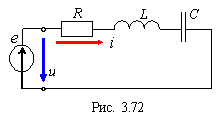
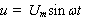

Резонанс напряжений (РН) возникает в цепи, содержащей индуктивную катушку L и конденсатор C, включенные последовательно с источником энергии е (рис. 3.72) . В схему замещения цепи включен также элемент R, учитывающий все виды потерь в катушке, конденсаторе и внутреннее сопротивление источника энергии.

При резонансе ток i в цепи должен совпадать по фазе с напряжением . Это возможно, если входное сопротивление Z = R + j(XL - XC) будет чисто резистивным.
Условием наступления РН в схеме (рис. 3.72) является равенство нулю реактивного сопротивления на входе цепи, т. е.